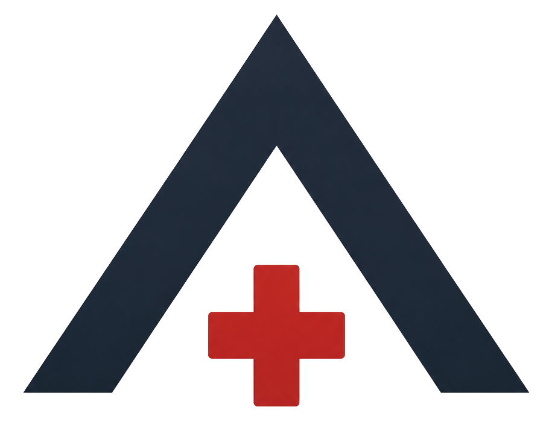

ARGUS Sichtung & LageführungARGUS ersetzt die handschriftliche Sichtung am Casualty Collection Point. Patienten erfassen, kategorisieren und verwalten — pseudonym, offline-fähig, geräteübergreifend in Echtzeit.
Jedes Gerät hat seinen eigenen Stand. Überblick nur, solange laut kommuniziert wird.
Wie viele T-1? Wie viele transportfertig? Antwort: nachzählen — in der Ausnahmesituation kostet das Zeit.
Handschrift, Licht, Handschuhe. Karten gehen verloren, und die Daten sterben mit dem Einsatz.
Der häufige Fall — ein einzelner CCP — bleibt so schlicht wie bisher. Alles Weitere ordnet sich der Einfachheit unter.
Direkte Kategorie oder geführte tacSTART-Sichtung. Die laufende Nummer kommt automatisch — geräteübergreifend, ohne Doppelvergabe.
Der Algorithmus führt durch jeden Entscheidungsknoten und schlägt die Kategorie vor. Entscheiden tut der Mensch — T-5 nie automatisch.
Vitalwerte (WASB), Verletzungen, Maßnahmen <c>ABCDE, Tourniquet-Timer, Foto. Der TQ-Timer läuft auch im gesperrten Zustand weiter.
Kamera, automatisch verkleinert, lokal gespeichert. Antippen für Vollbild — die schnellste Wiedererkennung im Getümmel.
Transport priorisieren, transportfertig markieren und ganze Kategorien beim Abtransport in einem Schritt auschecken.
Auf dem Homescreen installierbar, Vollbild, ohne App-Store. Jedes Gerät arbeitet auch ohne Netz weiter und gleicht später ab.
Dasselbe ARGUS passt sich an: schlicht im Feld auf dem Smartphone, luftiger auf dem Tablet, breit für Administration und Lagedashboard auf dem PC.
Was im Feld bewusst schlicht bleibt, nutzt am PC die Breite: Zugänge verwalten und das Lagebild über alle CCPs hinweg lesen — eine Codebasis, ein Backend.
| Code | Typ | Status | Erstellt | |
|---|---|---|---|---|
| MTEC-9PF7 | Dauerhaft | aktiv | 03.06. | widerrufen |
| CDSR-J9VB | Einmalig (24 h) | verbraucht | 04.06. | — |
| 8TVL-5E4U | Einmalig (24 h) | offen | 05.06. | widerrufen |
| LAGE-FLZ1 | Beobachter | read-only | 05.06. | widerrufen |
Laufende Nummer auf die Haut, Patient mit einem Tipp anlegen.
tacSTART oder direkte Kategorie T-1 bis T-5 zuordnen.
Vitalwerte, Maßnahmen, TQ-Zeit, Prio, Foto — alles am Patienten.
Transportfertig markieren und beim Abtransport auschecken.
Patienten werden über eine laufende Nummer identifiziert. Klarnamen sind optional. Kein Profil, kein Konto im Feld.
EU-Region (Frankfurt). TLS in der Übertragung, Verschlüsselung at rest. Daten verlassen die EU nicht unkontrolliert.
8-stelliger Zugangscode → signiertes Ticket → serverseitige Row-Level-Security. Ohne Ticket kein Zugriff — kein Login, kein Passwort im Feld.
Local-first: jedes Gerät arbeitet auch ohne Netz weiter und gleicht beim Wiederverbinden automatisch ab. Kein Funkloch bremst den Einsatz.
Im Feld bereits in einer Großübung erprobt. Aktuell in der Closed Beta auf dem Weg zum Echtbetrieb.

Zugang nach Absprache mit Träger und Datenschutzbeauftragtem. DSB-Briefing, Datenmodell, Compliance-Doku und Feldtest-Drehbuch liegen bereit.